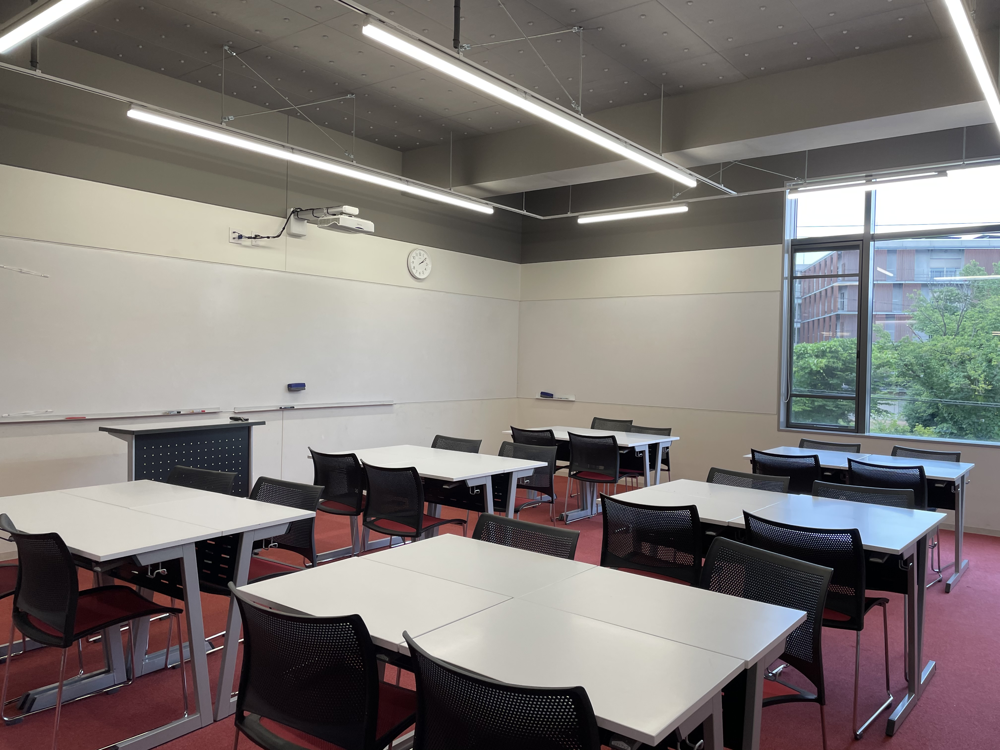

校舎案内
ドルトンの校舎にはおしゃれでドルトン固有(?)の場所が結構あります。そういうところや、僕が気に入っているところを紹介してみようと思います。
大階段

入口から二階のラーニングコモンズを通って三階まで行くことができる都ても大きな階段。登校時はほぼ全ての生徒がこの階段を上がって教室に向かう。
二階と三階の間にあるソファーには時々三年の憩いの場になっていたりすることもある。
カフェテリア
コロナ対策の一環で現在理科の授業も行われているカフェテリア。ラボの時どこも予約していなかった生徒が救済措置として行く場でもある。
たまにDSCの会議やCACの事前の集まりが行われていたりする。来年食堂が入るかどうか会議中らしいです。(数か月前の情報)
アリーナ
アリーナ。今回のアートフェスでは自分たちが小人になったような感覚になるらしいのでまだ行ってない人は是非行ってみてください。
普段は体育の授業やバスケ同好会、バドミントン部などで使われています。
315教室
椅子の代わりにクッションがあり、カラフルな教室で、生徒からの人気も高い場所です。今は何があったのか知りませんが、
窓の一つが割れてしまっており、立ち入り禁止になってしまっています。
和のラウンジ

和のラウンジは、二階のアリーナの反対側に位置する場所で、315教室の真下あたりにあります。ここは座敷のようなソファー？が沢山おいてあり、居心地の良い場所になっています。
実は雑誌がおいてあったり、将棋やオセロなどのボードゲームがおいてあったりします。
通常教室

黒板の代わりにホワイトボードがおいてあり、おしゃれにデザインされています。ドアが透明だったりプロジェクター、コンセントまである部屋です。(勝手にコンセント使うのはNG)
生徒たちはHR、終礼、授業など、かなりの時間をこれらの教室で過ごします。